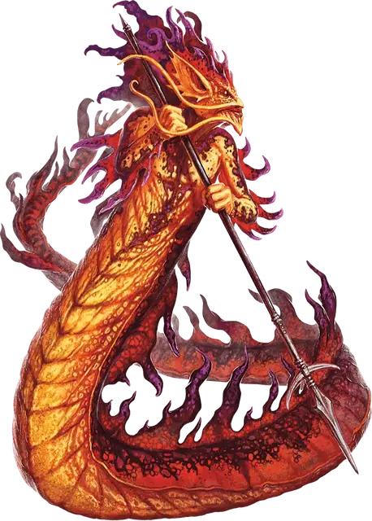

Саламандра
Salamander
Большой Элементаль, нейтрально-злой

Класс Доспеха 15 (природный доспех)
Хиты 90 (12к10 + 24)
Скорость 30 футов
| мод | спас | ||
|---|---|---|---|
| СИЛ | 18 | +4 | +4 |
| ЛОВ | 14 | +2 | +2 |
| ТЕЛ | 15 | +2 | +2 |
| мод | спас | ||
|---|---|---|---|
| ИНТ | 11 | +0 | +0 |
| МДР | 10 | +0 | +0 |
| ХАР | 12 | +1 | +1 |
Уязвимость к урону холод
Сопротивление урону дробящий, колющий, рубящий от немагических атак
Иммунитет к урону огонь
Чувства тёмное зрение 60 футов, пассивное Восприятие 10
Языки Игнан
Опасность 5 (1800 опыта)
Бонус мастерства +3
Среда обитания Подземье
Особенности
Раскаленное тело. Существо, касающееся саламандры или попадающее по ней рукопашной атакой, находясь в пределах 5 футов от нее, получает урон огнём 7 (2к6).
Раскаленное оружие. Все металлическое рукопашное оружие, используемое саламандрой, причиняет дополнительный урон огнём 3 (1к6) при попадании (уже учтено в атаках).
Действия
Мультиатака. Саламандра совершает две атаки: одну копьем, и одну хвостом.
Копье. Рукопашная или дальнобойная атака оружием: +7 к попаданию, досягаемость 5 футов или дистанция 20 футов/60 футов, одна цель. Попадание: Колющий урон 11 (2к6 + 4), или колющий урон 13 (2к8 + 4), если используется двумя руками для совершения рукопашной атаки, плюс урон огнём 3 (1к6).
Хвост. Рукопашная атака оружием: +7 к попаданию, досягаемость 10 футов, одна цель. Попадание: Дробящий урон 11 (2к6 + 4) плюс урон огнём 7 (2к6), и цель становится схваченной (Сл высвобождения 14). Пока цель схвачена, она опутана, саламандра может автоматически попадать по ней хвостом, и не может совершать атаки хвостом по другим целям.
Описание
См. дополнительно статью: "Бестиарий: Саламандры"